Ilusionismo con GitHub Pages
Agenda
-
Origen
-
GitHub Pages
-
Casos de uso
-
Alternativas
¿Por qué surge esta charla?
Publicar portfolio web
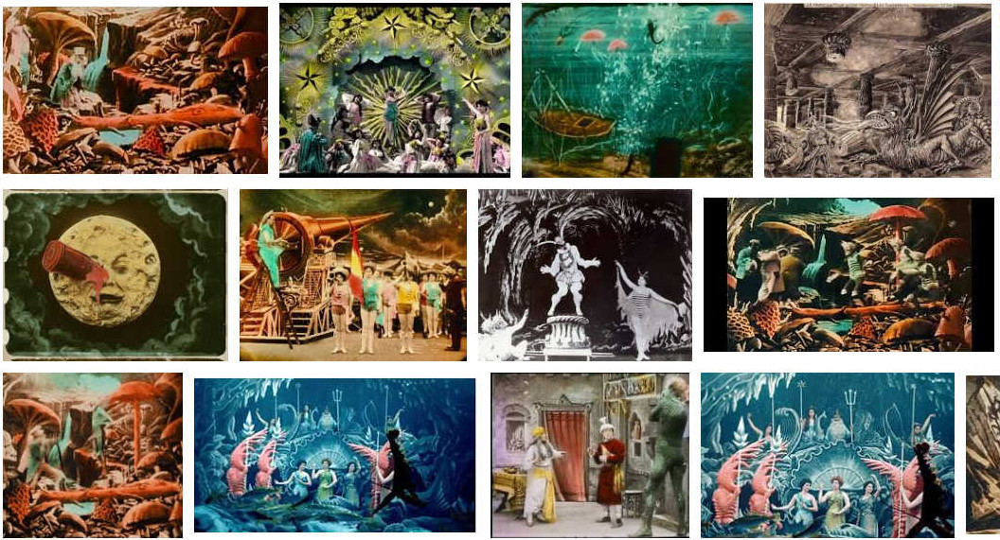Alojar código
Cinematógrafo (1895)
¿Qué es GitHub Pages?
User site y Project sites

https://user.github.io

https://user.github.io/repo
https://user.github.io
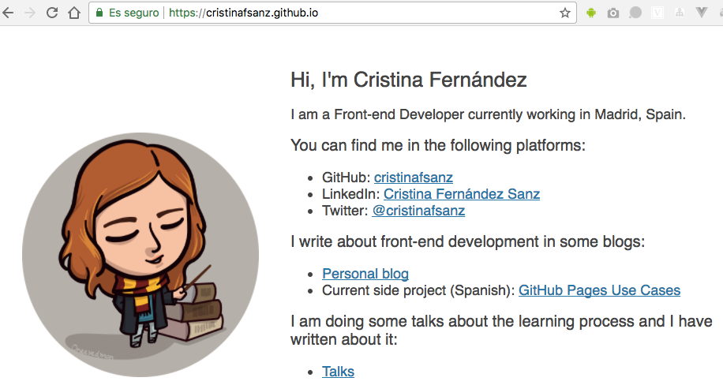¿Qué necesitas saber?
github.com: Crear repositorio

Clonar repositorio
- git clone git@github.com/user/repository.git
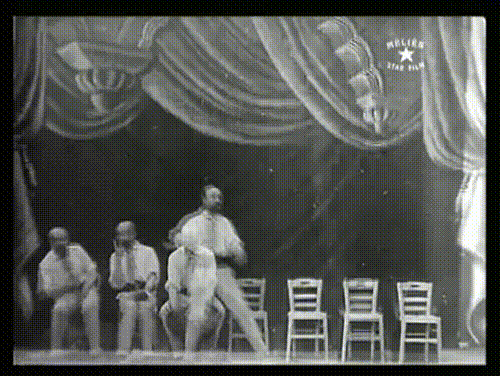
Añadir código al proyecto
Subir el código
- git add .
- git commit -m "Mensaje"
- git push origin master
Código en GitHub
Habilitar GitHub Pages
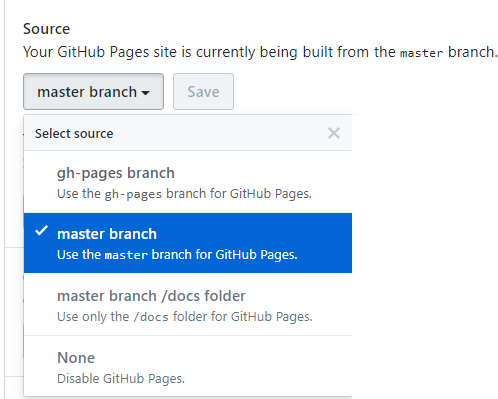Página web publicada
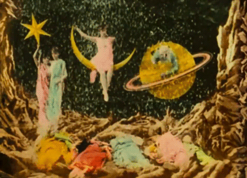¿Qué código publicas?
Truco de sobreimpresión
Extensión de Chrome Octotree
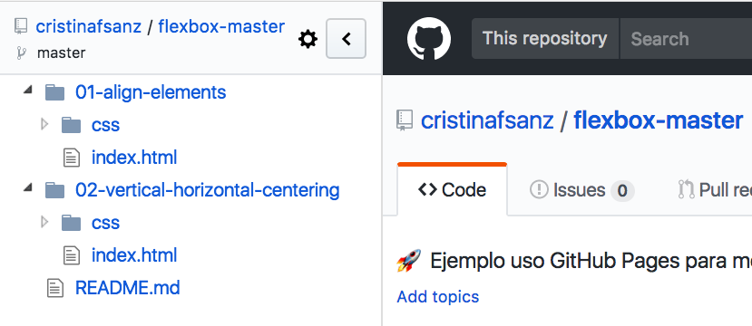1 proyecto publicado de 4 formas
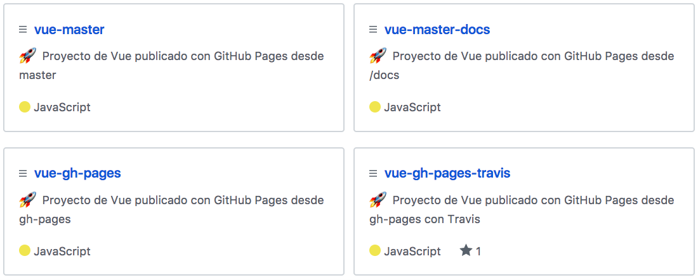Vue (Jose Dongil)
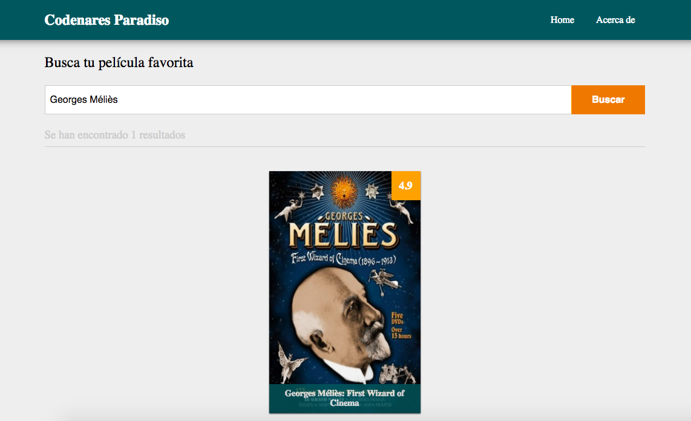Vue master
Vue master /docs

Vue gh-pages
Vue gh-pages Travis
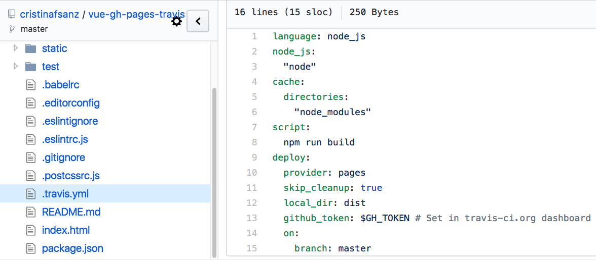Casos de uso
Cursos
Truco de parar

1 proyecto con una librería añadida

Flexbox (Diana Aceves)
Ejercicio
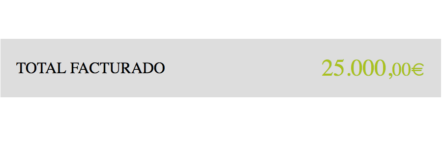
Flexbox con Jotted
Ejercicio con Jotted

Presentación
Esta presentación
Instrucciones
Blog
Instrucciones
Hugo

Documentación
Tema Jekyll inicial
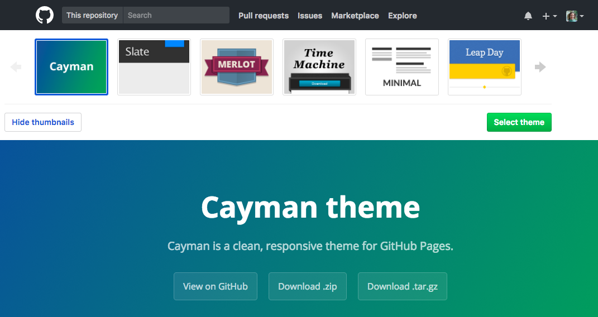Instrucciones
Alternativas
¿Por qué GitHub Pages?
Conclusión
¡Gracias!
- Repo proyecto : cristinafsanz/github-pages
- Slides : cristinafsanz/slides#codemotion
- Blog proyecto : https://melies-hugo.js.org
- @cristinafsanz
Créditos
- WebSlides es una solución open source creada por @jlantunez, @Belelros y @luissacristan. Si quieres saber más, ¡ponte en contacto!
Créditos
- Gifs de Méliès a partir de Giphy y Youtube utilizando el recurso Youtube to Gif.
- Portfolio web creado a partir de búsqueda de Google Images.
- Imagen de portada modificada a partir de una de la página Artistas artesanos.
- Mi avatar creado por @oneeyedman.
- Proyecto Vue a partir del repositorio de Jose Dongil.
- Ejemplos CSS a partir del curso de EscuelaIT de Diana Aceves.